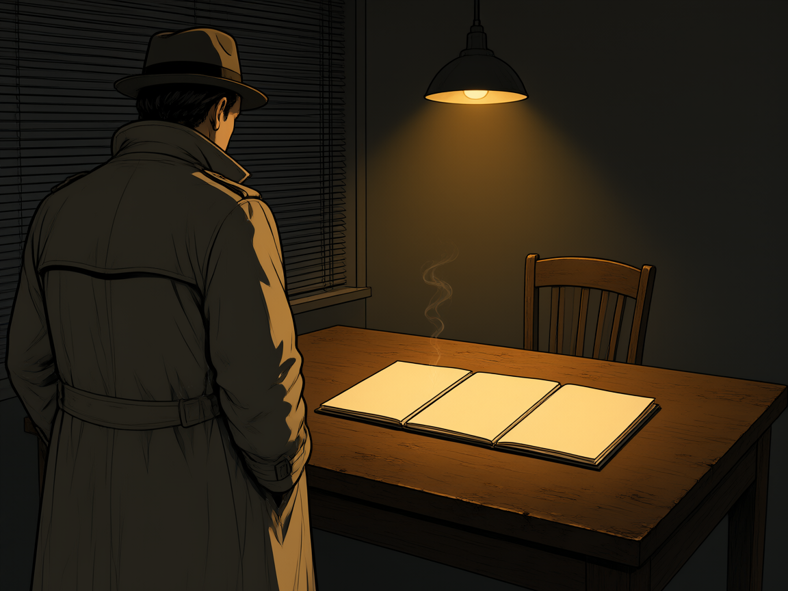

Três depoimentos, ninguém viu tudo. O que satisfaz os três ao mesmo tempo?

três depoimentos.
ninguém viu tudo.
Atenção vem antes de calibração. Vinte minutos de caminhada antes de sentar mudam o que você consegue notar.
Nenhum dos quatro é uma conta longa.
O mapa volta quando você mudar de bloco. Se a aula acabar no meio, é daqui que se retoma.
Duas retas no plano. A solução é o ponto onde elas se cruzam — se houver.
Nos três desenhos a conta é curta. O que muda é o desenho, não o esforço.
Qual destes quatro você resolve sem olhar?
Qual você evita?
A segunda equação existe para cancelar o \(y\). E quando ela não existir?
O sistema não é uma conta: é uma pergunta feita ao espaço.
Pergunta da fase: o que este sistema faz com o espaço? — a resposta começa no bloco 3 e termina no Portão 5.